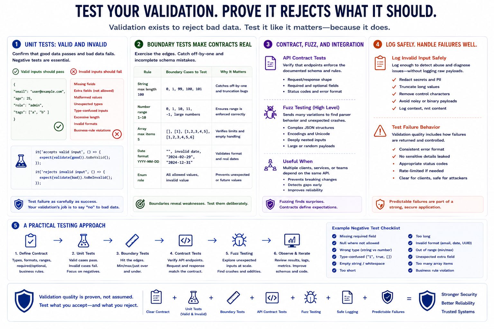

Testing Validation Logic
Connecting to LMS... Progress: in progress

Narration
Validation logic should be tested like any other important application behavior. Unit tests should confirm that valid inputs pass and invalid inputs fail. Negative tests are especially important because validation exists to reject bad data. Test missing fields, extra fields, malformed values, unexpected types, type-confused inputs, excessive length, invalid formats, and business-rule violations.
Boundary tests make contracts concrete. If a string allows one hundred characters, test one hundred and one. If a number must be between one and ten, test zero, one, ten, and eleven. If an array must contain a limited number of items, test empty arrays, maximum length, and over-limit input. These tests catch common mistakes caused by off-by-one assumptions and incomplete schemas.
API contract tests can confirm that endpoints enforce the documented schema. They are useful when multiple clients, services, or teams depend on the same API. Fuzzing at a high level can help discover parser behavior and unexpected crashes, especially around complex JSON structures, encodings, and nested inputs. Fuzzing does not replace clear requirements, but it can find cases developers did not anticipate.
Invalid input should be logged safely. Logging can help detect abuse and diagnose integration problems, but raw payloads may contain secrets, personal data, control characters, or intentionally noisy content. Test not only the happy path, but also how failures are reported, logged, rate-limited, and returned to the client. Predictable failure behavior is part of validation quality.